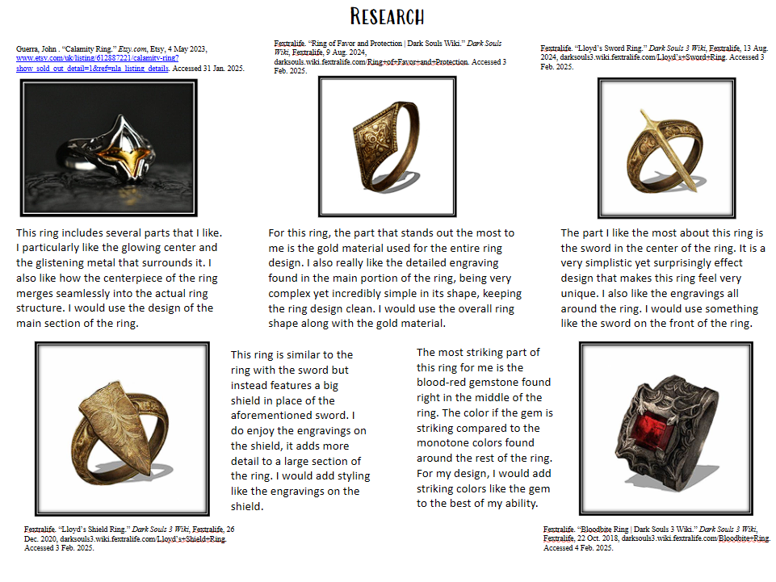
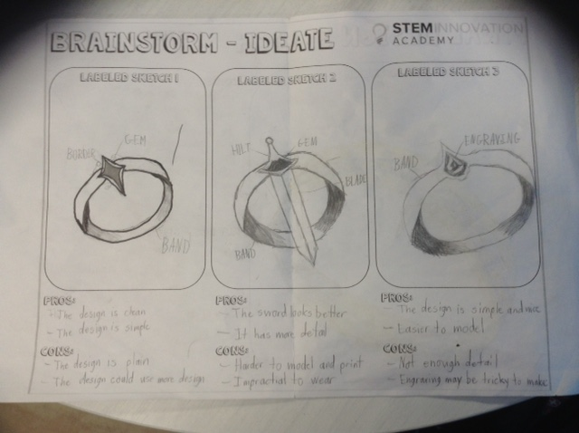
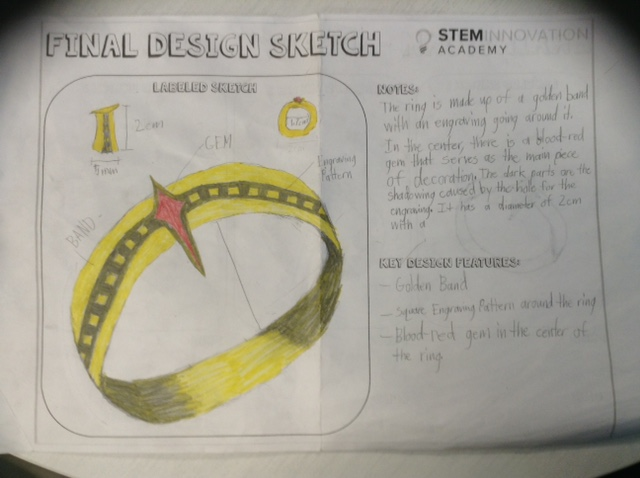
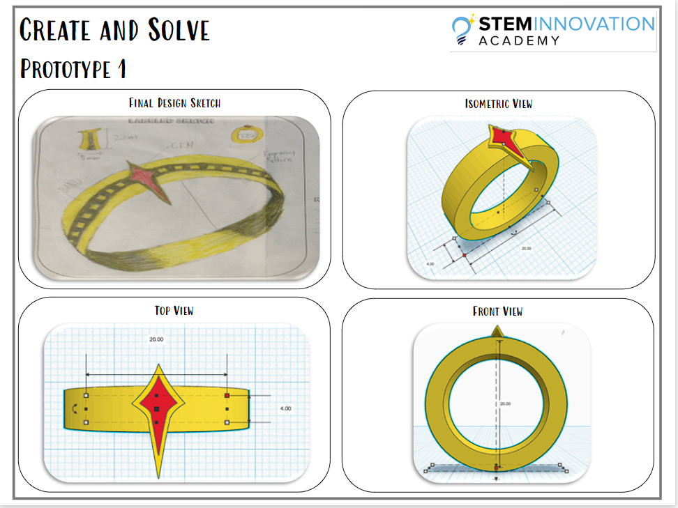
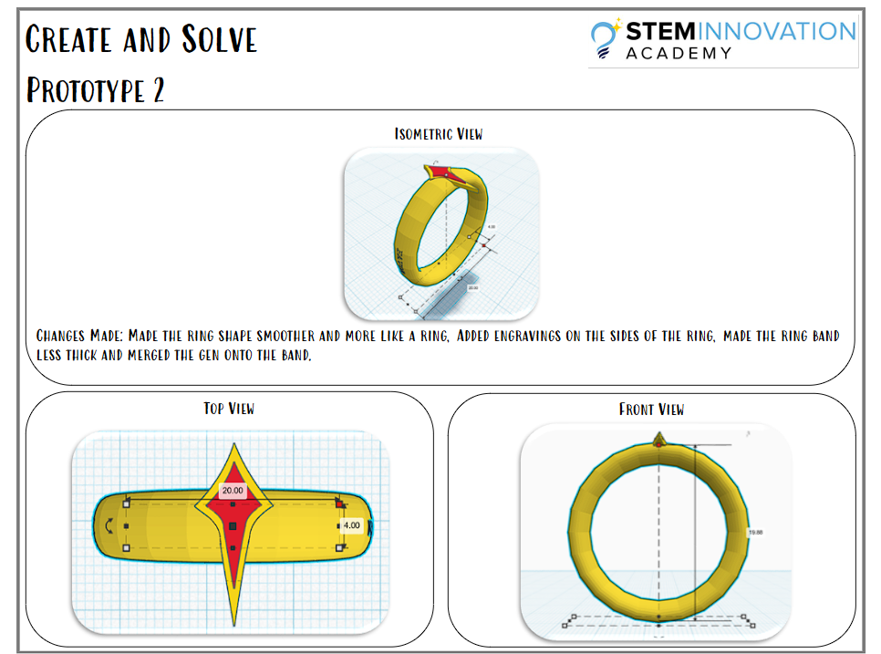
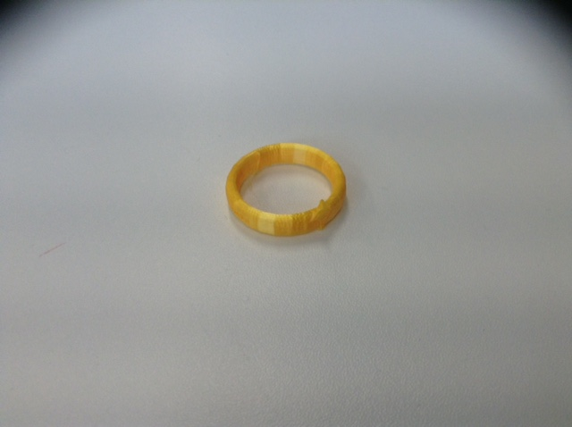

Identifying the Problem
The problem for this assignment is that I must create a piece of jewelry. This piece of jewelry must be 3D modeled using professional software such as TinkerCAD and Autodesk Fusion 360. The end result must be visually appealing and 3D printed so that it can be presented.
Criteria and Constraints
Criteria:
- The jewelry must be within the size limit of 10 cm length, 5 cm width and 2 cm height.
- The jewelry must be finished and presented in 3 weeks.
- The jewelry material is limited to PLA and TCU.
Constraints:
- The jewelry must be wearable.
- The jewelry must be modeled using TinkerCAD or Autodesk Fusion 360.
- The jewelry must be visually appealing.
Research:
Brainstorming:
 Create and Solve:
 Final 3D Print:
Reflection Questions:
What were you drawn to?
I was drawn to the more hands-on and creative aspects of 3D modelling. I enjoyed experimenting with the different shapes and techniques within
the 3D software to create a design that aligned with my vision of what I wanted my final prototype to be.
What might you want to learn more about?
I would love to learn more about how to make more advanced shapes in 3D modelling software. Although I enjoyed making my ring design, having a
better understanding of 3D modelling would allow me to create better and more complex designs that I could then print and turn into a physical
product.
What does what you learned connect to?
What I have learned connects to designing and prototyping. I have developed skills related to design through research, brainstorming and
reiterating. My time modelling, printing and testing my ring design has aided me in developing skills relating to engineering and prototyping.
What would you change?
I would maybe try to go with a more complex design with a more advanced software to create it. TinkerCAD, although beginner friendly, I feel did
not give me the necessary tools to create as intricate and detailed of a design as I would've hoped. Going forward, I might try experimenting
with better software such as Autodesk Fusion 360 and allocate more effort into creating a more complex design.